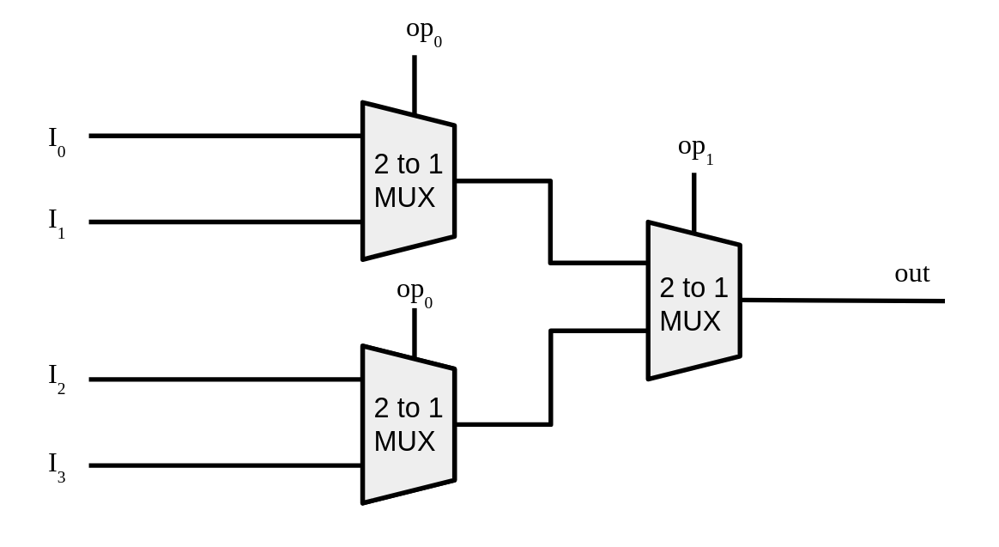

Gates and Circuits: Build a 4-bit ALU from Scratch
Due Date: 4/12/26
Description
In this homework, you will build a functioning 4-bit Arithmetic Logic Unit (ALU) in C in order to understand the core functionality of a large chuck of a modern CPU board. The twist: you are not allowed to use C's arithmetic or logical operators anywhere except inside a single primitive function. Every NOT, AND, OR, adder, and selector circuit must be constructed by composing that one primitive upward, exactly as real hardware is built from transistors.
This mirrors the actual abstraction hierarchy of a computer. A transistor is a switch. Wire enough switches together and you get a gate. Wire enough gates together and you get an adder. Wire enough adders together and you get an ALU. By the end of this assignment you will have done exactly that in code.
For reference on how gates relate to the hardware underneath them, revisit the Gates and Circuits lesson. The truth tables and gate compositions covered there are the foundation of every function you will write here.
The One Rule That Makes This Hard
The only place in your entire project where you may use C's built-in logical or bitwise operators (!, &&, ||, &, |, ^, ~) is inside a single primitive function called nand. Every other function must be built by calling nand and functions built from nand.
// The only "hardware" you are given. Everything else is built from this.
int nand(int a, int b) { return !(a & b); }
This is not arbitrary. NAND is functionally complete: any logic circuit that has ever existed or ever will exist can be built from NAND gates alone. Real chip fabs exploit this, they etch one cell type into silicon and vary only the wiring. You will do the same in software.
Enforcement: Before submitting, run a search on your code for &&, ||, !, &, |, ^, and ~. Any occurrence outside of nand() itself is a violation and will result in a deduction for that section. Graders will check this.
Project Structure
CS220-HW1-LastName/
├── gates.c # Part 1: all seven logic gates single bit and bitwise
├── circuits.c # Part 2: half adder, full adder, ripple carry adder
├── alu.c # Part 3: MUX and the complete 4-bit ALU
├── main.c # Part 4: test harness and your written reflections
└── alu.h # Header you will write to declare all functions
All files must compile together with no warnings under:
Download the starting point here.
Part 1: The Gate Layer (25 points)
File: gates.c
Implement all seven fundamental logic gates using only calls to nand(). You may call gates you have already implemented to build later ones, for example, not() may be used inside and().
Function signatures:
int not (int a);
int and (int a, int b);
int or (int a, int b);
int xor (int a, int b);
int nor (int a, int b);
int nand(int a, int b);
int xnor(int a, int b);
Requirements:
- Every function body must contain only calls to
nand()and/or previously defined gate functions. No C operators. - Derive each construction yourself from the truth tables. Do not look up the NAND compositions, working them out is the point of this section.
- Each gate function must be accompanied by a comment explaining in one sentence why its NAND construction produces the correct result.
Verification: In main.c, print the complete truth table for all seven gates (all input combinations, labeled). Your output must match the truth tables from the lesson exactly. A wrong truth table means the gate is wrong, debug before moving on, because every later section depends on this one.
Hint for getting started: Think about what NAND already gives you. If you apply NAND to a signal and itself, nand(a, a),what does that truth table look like? Start there and work outward.
After verifying the basic single bit versions of the gates , create 4-bit bit wise versions of each following the pattern below:
uint8_t bitwise_not(uint8_t a) {
int b0 = not(and(a >> 0, 1));
int b1 = not(and(a >> 1, 1));
int b2 = not(and(a >> 2, 1));
int b3 = not(and(a >> 3, 1));
return (b3 << 3) + (b2 << 2) + (b1 << 1) + b0;
}
The above example is for the bit wise NOT, use it as the example for the other bit wise gates. The only thing needed is to copy the above block for each gate and replace not with the current gate. They all follow this pattern and only at this stage you are allowed to use the + operator.
These bit wise versions of the gates are the ones you will use for part of the the arithmetic circuits and for the ALU gate operations.
Part 2: The Arithmetic Layer (30 points)
File: circuits.c
Build adder circuits using only the gate functions from Part 1. The goal is a function that can add two 4-bit numbers, bit by bit, by chaining four full adders, exactly as described in the lesson.
Task 2a: Half Adder (8 points)
A half adder adds two single bits and produces a sum bit and a carry bit.
This requires exactly two gate calls. Work out which gates produce the sum and carry by examining the truth table for 1-bit addition before writing any code.
Task 2b: Full Adder (10 points)
A full adder adds two bits plus a carry-in from a previous stage, producing a sum bit and a carry-out.
Build this from two half adders and one OR gate. No other gates or C operators.
Task 2c: Ripple Carry Adder (12 points)
Chain four full adders to add two 4-bit numbers. Each full adder's carry-out feeds into the next full adder's carry-in; the carry "ripples" from bit 0 (LSB) to bit 3 (MSB).
Requirements:
- Extract individual bits from
aandbusing only right shifts and yourand()gate function. Do not use C's&operator directly. - Feed each extracted bit pair into a full adder along with the carry from the previous stage.
- Reassemble the four sum bits into the output byte using only left shifts and your
or()gate function. - Set
*overflowto 1 if the carry-out of the MSB full adder is 1, and 0 otherwise. - Carry-in for the bit-0 full adder is always 0.
Verification: Test your adder against all 256 combinations of 4-bit inputs (0–15 for each operand). Print a table showing A + B = Result (expected) and flag any mismatches. All 256 combinations must be correct before moving on.
Important: Use uint8_t throughout to avoid signed integer issues with bit shifting. Include <stdint.h>.
Part 3: The ALU (30 points)
File: alu.c
A real ALU does not just add, it can perform multiple operations and selects which result to output based on a control signal. You will implement this selection mechanism as a multiplexer (MUX) circuit, then use it to build the complete ALU.
Task 3a: 1-bit MUX (10 points)
A multiplexer selects one of two inputs based on a selector bit. If sel = 0, output is a. If sel = 1, output is b.
Build this using only your gate functions. No C operators, no if statements, or ternary operators, the selection must happen through pure gate logic. Work out the boolean expression for a MUX from its truth table, then implement it.
| sel | a | b | output |
|---|---|---|---|
| 0 | 0 | 0 | 0 |
| 0 | 0 | 1 | 0 |
| 0 | 1 | 0 | 1 |
| 0 | 1 | 1 | 1 |
| 1 | 0 | 0 | 0 |
| 1 | 0 | 1 | 1 |
| 1 | 1 | 0 | 0 |
| 1 | 1 | 1 | 1 |
Verify by printing the full truth table before moving on.
In order to complete the ALU section, you will need to create an extension of the 2-1 MUX for it to allow 4 bit inputs with a 2 bit selection signal to choose the single output. The way you do this is to nest a total of 3 MUX together in the following scheme:

You may make it into a function or repeat it each time you need a 4 bit MUX.
Task 3b: 4-bit ALU (20 points)
Combine your ripple carry adder, bitwise gate circuits, and MUX into a complete 4-bit ALU. The ALU supports four operations selected by a 2-bit opcode (op1, op0):
| op1 | op0 | Operation |
|---|---|---|
| 0 | 0 | ADD |
| 0 | 1 | AND |
| 1 | 0 | OR |
| 1 | 1 | XOR |
Requirements:
- Compute all four operation results unconditionally, then use MUX circuits to select the correct one based on
op1andop0. The selection logic must use yourmux()function; noif,switch, or ternary operators in the selection step.- For the bit wise operations (AND, OR, XOR), use the bit wise versions of the gates from part 1
- The opcode selection must itself be implemented in terms of your gate and MUX functions. Think about how two selector bits can be combined to choose among four options.
Verification: Your main.c must test all four operations against all 256 input combinations (0–15 × 0–15 for 4-bit values) and report pass/fail per operation against a known-correct reference computed using C operators directly. This is meant to be your own final grade/sanity check as the grader will be doing the exact same thing with a premade test program. If you can accurately make a test program and show all passes, you know you will get a good grade.
Part 4: Test Harness and Reflection (15 points)
File: main.c
Task 4a: Test Harness (10 points)
Write a main() that runs all verification checks described in Parts 1-3 in sequence. Output should be clean and labeled:
=== Part 1: Gate Truth Tables ===
NOT: 0->1 1->0 [PASS]
AND: 00->0 01->0 10->0 11->1 [PASS]
...
=== Part 2: Ripple Carry Adder ===
Testing all 256 input combinations...
[PASS] 256/256 correct
=== Part 3: MUX ===
Testing all 8 input combinations...
[PASS] 8/8 correct
=== Part 3: ALU ===
ADD: [PASS] 256/256
AND: [PASS] 256/256
OR: [PASS] 256/256
XOR: [PASS] 256/256
Any failure must print the specific input combination that failed and the wrong output produced.
Task 4b: Written Reflection (5 points)
At the bottom of main.c, in a block comment, answer all three of the following in 3–5 sentences each:
- The hard part. Which step was the most difficult to implement and why? What was your mental model before you started, and how did it change once you got it working?
- The MUX moment. The MUX uses gate logic to replace an
ifstatement. In your own words, explain how a circuit made of gates can make a decision without any conditional branch. Where else in a CPU does this same idea appear? - Scaling up. Your ripple carry adder waits for each carry before the next stage can compute. Modern CPUs add 64-bit numbers in a single clock cycle. What would have to change about the circuit design to make that possible, and what would the tradeoff be?
Grading Rubric
| Section | Points |
|---|---|
| Part 1: All seven gates correct (verified by truth tables) | 25 |
| Part 2a: Half adder | 8 |
| Part 2b: Full adder | 10 |
| Part 2c: Ripple carry adder, all 256 combinations correct | 12 |
| Part 3a: MUX, all 8 combinations correct | 10 |
| Part 3b: ALU, all four operations × all 256 inputs correct | 20 |
| Part 4a: Test harness output clean and complete | 10 |
| Part 4b: Written reflection, all three questions answered | 5 |
| Total | 100 |
Submission Guidelines
Submit a single .zip file named lastname_firstname_hw_alu.zip containing:
Do not include compiled binaries or object files. The grader will compile from source. Make sure your code compiles cleanly with the command listed at the top of this document before submitting.
Tips and Common Mistakes
Start with Part 1 and do not move on until every truth table is correct. Every later section is built on the gate layer. A wrong xor() will break the adder. A wrong adder will break the ALU. Debugging from the top down is painful, debug from the bottom up.
Extracting bits is harder than it looks. Getting bit N out of a uint8_t without using & directly requires thinking carefully about what and() takes as inputs (single bits, not bytes). Think about how to get a byte down to a single bit using only shifts and your gate function before you write the adder.
The MUX has no if. If you find yourself writing if (sel) inside mux(), that is not a gate circuit, that is a C branch. Go back to the truth table, write the boolean expression for the output, and implement that expression using gates.
Use uint8_t everywhere. Right-shifting a signed integer in C has implementation-defined behavior. If your adder produces mysterious wrong answers, signed integers are the most likely culprit. Include <stdint.h> and declare everything uint8_t or int as appropriate for single-bit signals.
Comment your NAND constructions in Part 1. Writing out why nand(a, a) gives you NOT in a comment cements the understanding and is worth points. It also helps when you debug later sections and need to trace back through the gate implementations.